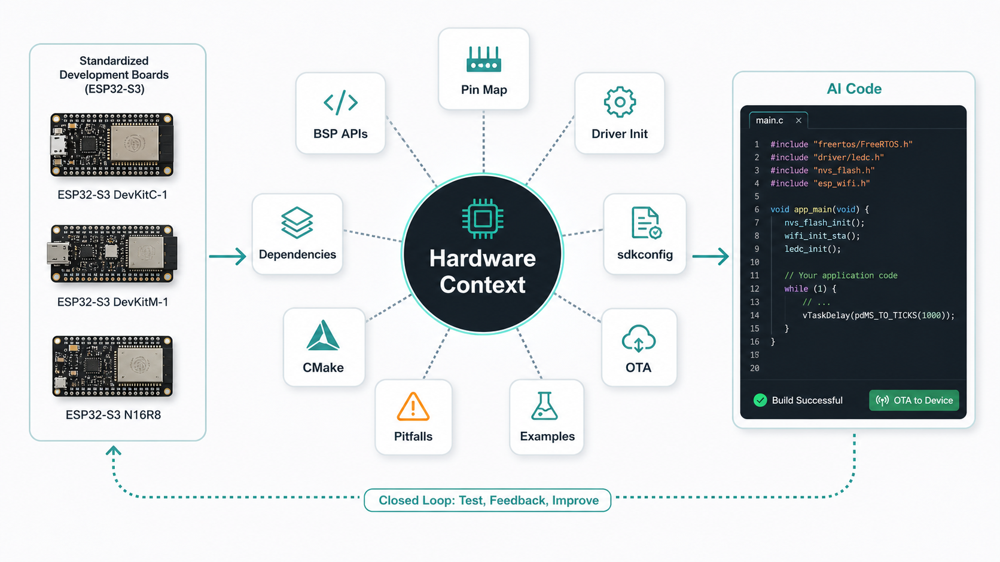
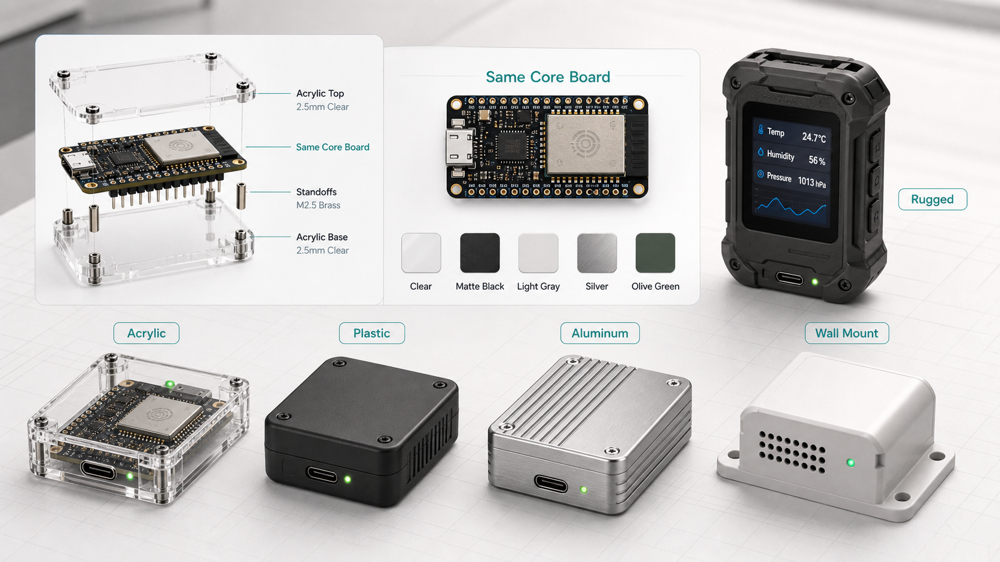
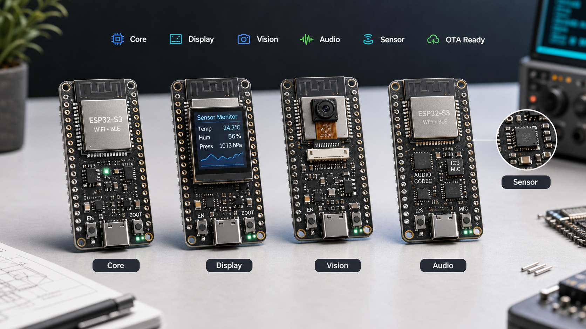
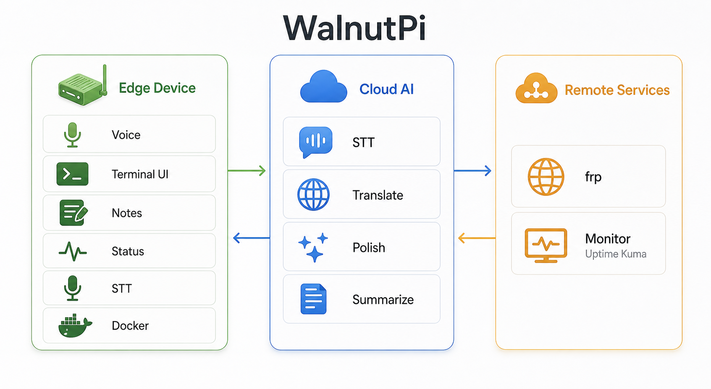
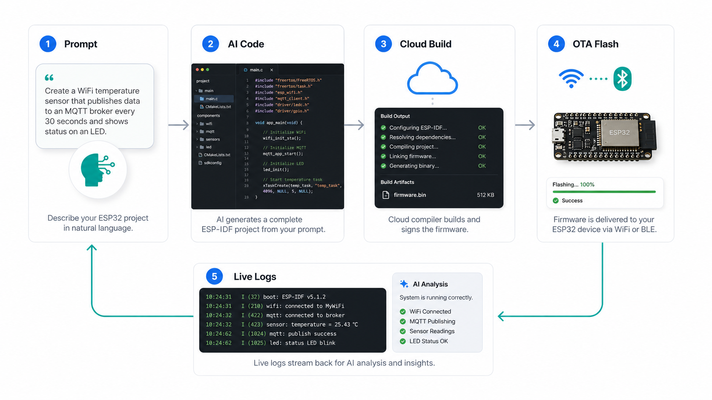

我们不是只做 AI 写代码，而是把标准硬件做成 AI 能理解的开发入口。
ESP32 Vibe Coder 由一组标准化 ESP32 开发板、结构化硬件上下文和浏览器 IDE 组成，让 AI 生成的固件能贴合真实板卡、能编译、能无线烧录、能从日志继续迭代。
核心资产之一：标准化开发板矩阵。
我们提供的不是零散硬件，而是一组为 AI 开发流程设计的标准板卡。每块板都有固定外设组合、统一命名、统一 BSP、统一示例、统一 OTA 能力，方便 AI 生成可落地代码。

标准开发板规划：用少量高频板型覆盖大量 AIoT 原型需求。
投资人需要看到硬件抓手：标准板卡既是收入载体，也是数据和开发者生态入口。
Core Board
统一 ESP32-S3 主控、无线能力、USB-C、OTA 引导和基础 GPIO，作为所有场景的最小开发底座。
Display Board
内置 LCD、触控或按键、LVGL 配置和显示示例，面向仪表盘、控制面板和交互终端。
Vision Board
集成摄像头接口、图像采集链路和边缘视觉示例，面向识别、监控和 AI 传感入口。
Audio / Sensor Board
覆盖麦克风、扬声器、IMU、环境传感器等能力，面向语音交互、运动检测和数据采集。
同一套标准板卡，可以进入不同外壳、材质和产品形态。
除了开发板本体，我们还可以提供外壳结构、材质选择、外观 ID 和小批量产品化支持。这样客户不是只拿到一块裸板，而是能快速进入可展示、可试产、可交付的设备形态。


让 AI 真正理解“这块板”。
通用大模型知道 ESP32，但不知道你这块板的真实硬件连接。我们的关键壁垒是把板卡资料结构化，并在代码生成、编译配置和错误修复时自动注入。
软件平台：把标准板卡变成浏览器里的 AI 开发体验。
硬件标准化解决“AI 知不知道板子”的问题，软件平台解决“代码能不能跑起来”的问题。
硬件上下文增强 AI
系统提示注入开发板引脚、外设地址、BSP API、常见陷阱，让 AI 生成贴合具体板卡的 ESP-IDF 代码。
云端 ESP-IDF 编译
Flask 编译服务封装 Docker 里的 ESP-IDF v5.4，浏览器提交项目文件即可获得构建日志和固件二进制。
无线烧录与日志闭环
支持 WiFi OTA、BLE OTA、WebSocket 日志和 WebSerial 日志，失败日志可直接交给 AI 分析修复。

产品形态：浏览器中的嵌入式开发工作台。
左侧是多文件工程编辑器，右侧是 AI 助手和设备日志。用户描述功能，AI 生成应用源码；系统负责生成关键构建配置，降低 CMake、sdkconfig、组件依赖出错概率。
端到端工作流
从自然语言需求到设备运行结果，形成可演示、可扩展、可商业化的工程闭环。

差异化与潜在壁垒
商业化路径
先用单板闭环验证产品价值，再扩展板卡库、团队协作、私有部署和教育/企业服务。
近期里程碑建议
“ESP32 Vibe Coder 的壁垒来自三层：标准化开发板，能产品化的外壳结构与外观方案，以及把真实硬件变成 AI 可理解上下文的软件闭环。”